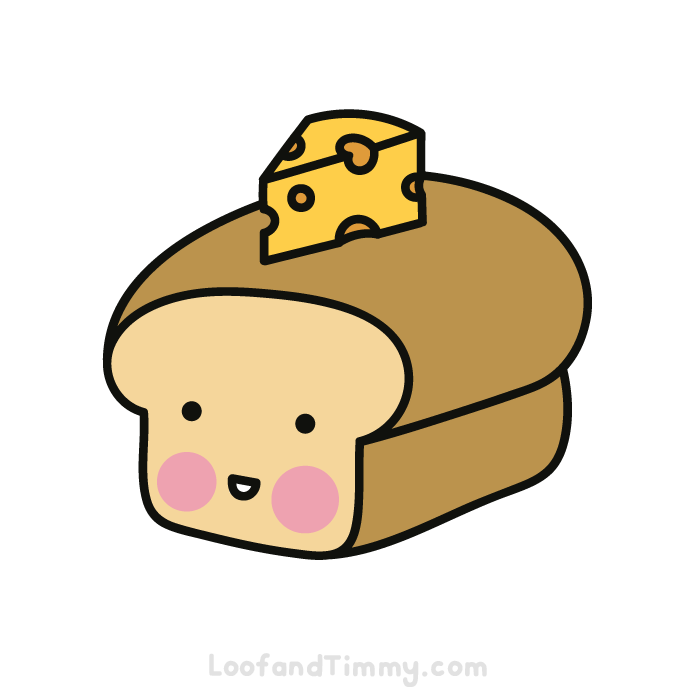

Cheese on Toast Recipe

Do you ever feel hungry and think to yourself "I could really do with eating just Carb and Fat".
Well, You're in luck. Cheese on Toast is the perfect balance of needing food but not wanting nutrition.
Follow along to learn and finally call your Mum to say "Yes Mum, I can cook for myself". Then you'll get the respect you deserve.
Ingredients
Now believe me when I say, if you can read the title then you shouldn't need this.
- Cheese
- Toast
- Aaaah, I got you. You will need bread technically
Now you have these ready, we'll begin
Instructions
Here we go:
- Put your bread in the toaster on the lowest setting
You don't want to toast it too much, just dry slightly crisp it
- While the toast is going, turn your grill on low-medium and start slicing/grating cheese.
- by the time you finish the cheese your toaster should have popped. This is when you put the cheese on the toast
- Now the finale, place the cheese on toast into the grill and keep an eye on it until you see the cheese fully melted
- Finally, take it out and call your parents. You've earned it
And that is it. Congratulations and good luck going into adulthood.
Click HOME to go back to the homepage